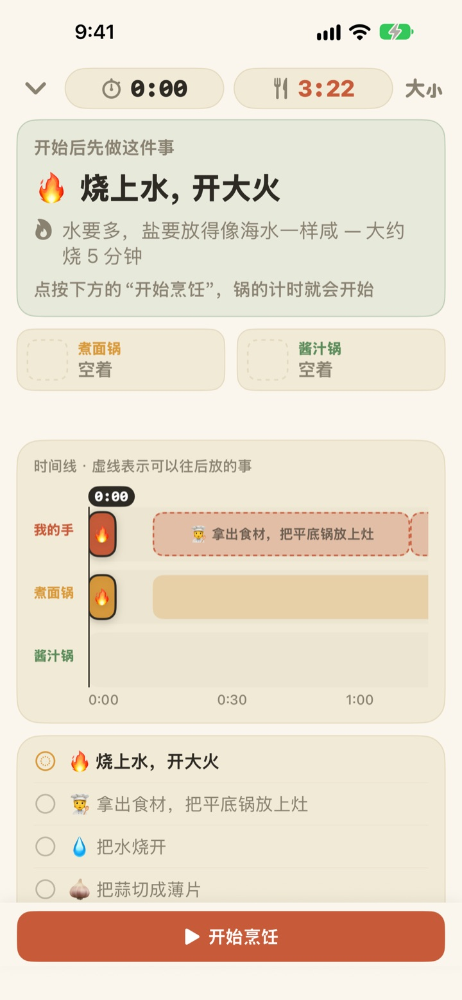
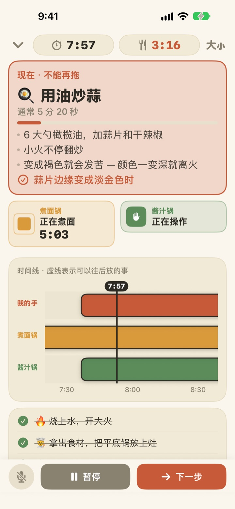
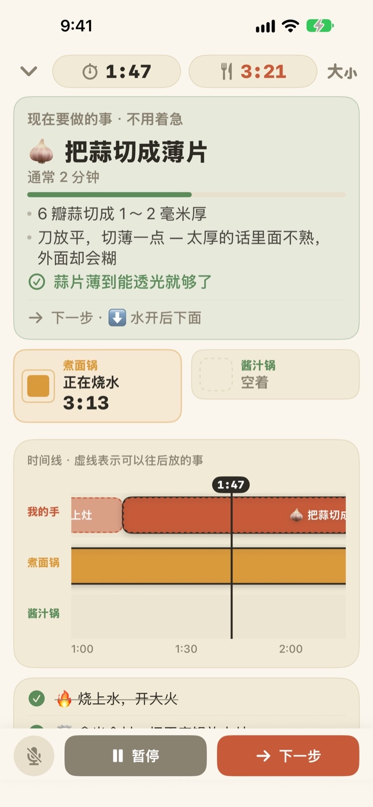
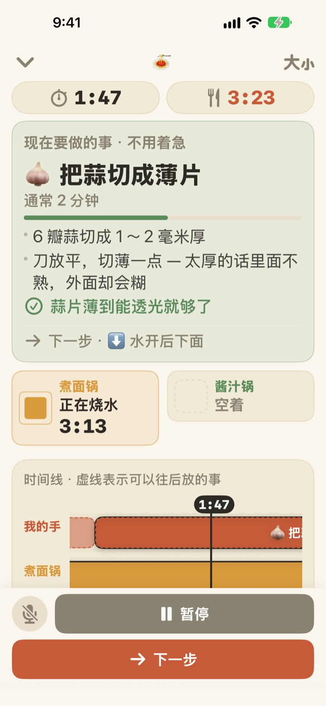

煮面的同时，
酱汁也做好了
两口锅以不同的节奏进行时，Geusaie 只用大字显示你的手现在要做的那一件事。酱汁的开始时间，会从面出锅的那一刻倒推出来。
所有功能免费，无需账户。

亲手试试
用 20 倍速做一份蒜香橄榄油意面。点按“开始烹饪”，然后每当你“做完”一件事就点“下一步”。也看看到了该捞面的时候，卡片会怎样变化。
定了三个计时器，面还是煮烂了？
面一个计时器，酱汁一个计时器，炒蒜的时间还得记在脑子里，很快就分不清先做哪个。正切着蒜，错过了捞面的时机，酱汁又比面晚好两分钟。Geusaie 把菜谱理解为“先做这个，再做那个”，所以只告诉你现在该做的那一件事。
不能等的事一到，卡片就变红
捞面、快要炒焦的蒜，这类一耽误就会毁掉整道菜的事一到，卡片就会变成赤陶色，提醒你先放下手里的切配。
锅里的东西好了，即使你没在看屏幕也会收到通知，并告诉你马上要做什么。

切配只在手空的时候做
切蒜片、擦奶酪、称量，这些事什么时候做都行，所以不倒数秒数。手空的时候进度条慢慢涨，锅一叫你就暂停，回来后从原处接着做。
晚 3 分钟开火，后面的事也会一起顺延 3 分钟。时间表每次都按你实际做事的时间重新计算。

立在灶台边，用声音翻到下一步
字号可以放大四档，退后一两步也看得清；烹饪时屏幕不会熄灭。
手是湿的？说下一步，不用碰屏幕就会进入下一件事。

三步就能开始
- 1
选一道菜
看看大概要多久、需要几口锅就能选。
- 2
点按“开始烹饪”
先显示第一件要做的事，点下的那一刻锅的计时开始。
- 3
做完就“下一步”
点按按钮或说“下一步”，接下来要做的事就会出现。
颜色就是紧急程度
- 绿色
- 切配类的事，慢慢来就好。
- 芥末黄
- 轮到锅里的动作了，现在做就好，不算急。
- 赤陶色
- 再拖面就软了，蒜就焦了。现在就做。
- 锅格
- 方块缩小多少，就是还剩多少时间。锅的时间从不隐藏。
时间轴上用虚线画的条，是可以往后推的事。
所有功能都免费
免费
- 两道菜谱全部可用
- 每口锅单独计时，外加完整时间轴
- 锅好了会发通知
- 用声音说“下一步”
- 四档字号
- 通过 Siri 和快捷指令直接打开
支持开发者（自愿）
- 觉得好用时，可以在设置里送一点小费
- 小费不会解锁任何功能，不送也能使用全部功能
每次单独支付，不是订阅。
无需账户，没有广告，没有网络也能做饭。
常见问题
说了“下一步”却没有反应。
左下角的麦克风按钮为红色表示正在聆听，灰色表示已关闭。第一次使用时需要同时允许麦克风和语音识别；如果之前拒绝了，可以在“设置”App > Geusaie 中重新打开。App 听的是“下一步”按钮上写的那个词。厨房非常吵时，直接点按屏幕下方的“下一步”即可。
锅已经好了，却没收到通知。
请在“设置”App > 通知 > Geusaie 中确认通知已打开。开启专注模式时可能不会响铃。只有锅好了才会通知；切、擦这类切配不会发通知，免得催你。
开始晚了，时间表会怎样？
会按你实际做事的时间重新计算。晚 3 分钟开火，后面的事也一起顺延 3 分钟；酱汁则按面出锅的时间倒推安排。
字太小了。
在烹饪界面右上角的字号按钮中，可以选择标准、大、更大、特大。选好的字号下次会保留。
做饭时屏幕会熄灭吗？
烹饪过程中屏幕不会熄灭，手湿着也不用去碰屏幕。
有哪些菜？
蒜香橄榄油意面（约 15 分钟，两口锅）和番茄奶油意面（约 20 分钟，两口锅），参考了 Serious Eats、Gimme Some Oven、RecipeTin Eats 和 The Burnt Butter Table 的菜谱。只要是两口锅同时开火的菜都适合，欢迎告诉我们你想加的菜谱。
我的声音会被保存吗？
不会。App 只听“下一步”这一个词，不录音也不保存任何声音。设备支持时，语音识别只在设备上完成。不收集任何个人信息。
可以用 Siri 打开吗？
可以。在 Siri 或“快捷指令”App 中选一道菜，就会直接打开那道菜的烹饪界面。准备好烧水、点按“开始烹饪”后，计时才会开始。
支持哪些设备？
运行 iOS 17 或更高版本的 iPhone 和 iPad。无需账户，也不需要联网。
怎样反馈问题或推荐菜谱？
请通过 App 的设置 > 发送反馈，或发邮件到下方地址。附上设备型号和 iOS 版本，我们能更快查明原因。通常会在几天内回复。
遇到问题、发现异常，或有想加的菜谱，都欢迎发邮件到 leeo@kakao.com。